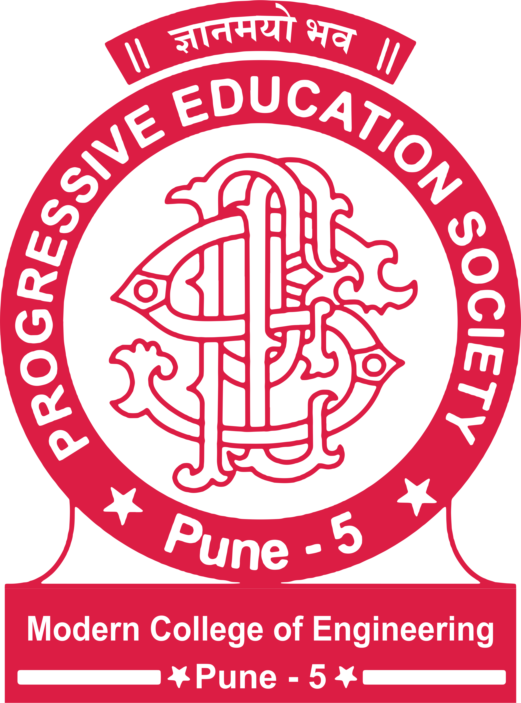

PROGRESSIVE EDUCATION SOCIETY'S
MODERN COLLEGE OF ENGINEERING
Contact Us
About Course Outcome and Programming Outcome
Click Here to calculate COPO
What is Course Outcome:
a course outcome refers to the specific knowledge, skills, or abilities that students are expected to acquire or demonstrate by the end of a particular course.
Course outcomes outline the measurable and observable learning outcomes that are expected from students as a result of their engagement in the course. Course outcomes serve as a guide for educators in designing curriculum, selecting instructional methods, and assessing student performance.
These outcomes help ensure that students achieve the desired learning objectives and demonstrate proficiency in the subject matter. Course outcomes can vary depending on the discipline, level of education, and specific course content. They are often written in specific, measurable, achievable, relevant, and time-bound (SMART) format to provide clear expectations and enable effective assessment of student learning.
Examples of course outcomes could include:
1. Demonstrate proficiency in solving mathematical equations.
2. Apply critical thinking skills to analyze and evaluate scientific data.
3. Communicate effectively in written and oral forms.
4. Apply principles of marketing to develop a comprehensive marketing plan.
5. Demonstrate proficiency in programming languages by developing software applications.
Course outcomes help students understand the expected learning outcomes and provide educators with a framework for teaching and assessment.
By aligning instructional activities, assignments, and assessments with course outcomes, educators can ensure that students are progressing towards the intended learning goals.
WHAT IS PROGRAMMING OUTCOME :
Statements expressing a program’s goal are called program outcomes. Program outcomes particularly refer to the knowledge or skills that a student should possess after a course. They are frequently considered to be the information and abilities that students will have acquired by the period they have gotten their desired education.
1. An outcome of a program must always be immediately related to and reflect the objective of the college, division, school, or department.
There should be no doubt as to how the mission will affect the result.
2. The program’s academic subject must be directly tied to a program outcome.
3. Put your attention on program outcomes that demonstrate the precise information and abilities you anticipate students acquiring as part of their academic experience in the curriculum.
4. Aim to steer clear of program outcomes that are primarily focused on the general aspect of education.
5. A program’s outcome needs to be visible and quantifiable. Instead of focusing on what students know, believe, comprehend, or enjoy, etc., create outcomes that are based on observable behaviors.
6. Instead of academic inputs, a program’s outcome must be centered on learning outcomes. Don’t forget to highlight the abilities and knowledge program graduates ought to have.
7. A single statement should possess a particular outcome not a combination of outcomes in a single statement.
These outcomes are meant to provide a general overview, and the specific outcomes can vary depending on the level and focus of the programming course or program within the college.